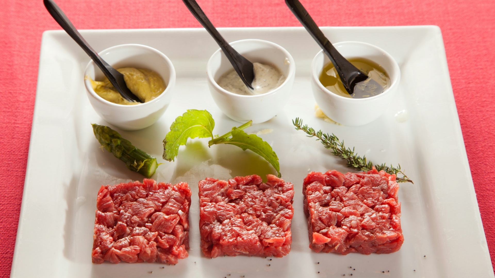
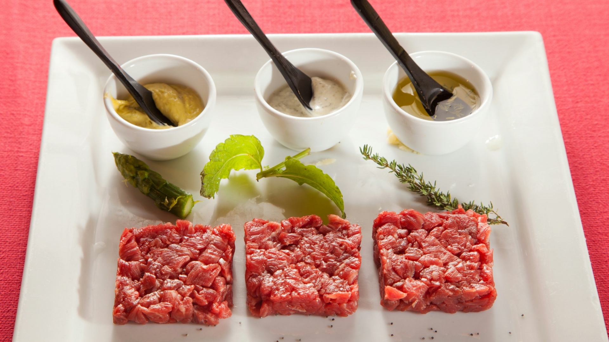

AD HOC
Discover the flawors of Rome
AD HOC RESTAURANT
If you are looking for a restaurant in the center of Rome, Ad Hoc Restaurant is the right answer.
Welcomed in the 15th century building that houses our restaurant in the center of Rome, before or after a wonderful walk between Piazza di Spagna, Via dei Condotti and Piazza del Popolo, the warm and romantic atmosphere of the Ad Hoc restaurant will be the perfect landing place for an evening of taste and savoir vivre. Our staff will be able to accommodate you offering a highly professional but friendly and punctual service. The service, polite and attentive for a unique experience, has itself become Ad Hoc Restaurant's point of pride as well as one of the reasons of great appreciation from our customers.
Book online to get 10% discount!
FOOD
With passion and dedication we propose a revisited Roman and Mediterranean cuisine, sometimes never distorted: traditional for the quality of the first ingredients, modern for lightness and combinations. A few words about our philosophy and the choice of raw materials. Five types of bread that we prepare every night.
Oil service: each guest will be served this delicacy from the Tuscan lands to accompany the dinner of the Bourbon del Monte estate.
JOWLS AND PROSCIUTTI ARE OF OUR PRODUCTION; THEIR SEASONING IS CURED AND FOLLOWED DIRECTLY BY US IN OUR DIFACEE CELLARS IN SUBIACO. WE MAKE THE SALMON SMOKING AT HOME AND WE CARE FOR HER FILLING MEATS (THREADS, COUNTERFILETS, BEEF GUIDES, LAMBS, ONLY FROM ITALIAN BREEDS).
ALL OUR FRESH PASTA ARE PREPARED AND PULLED STRICTLY BY HAND FROM OUR CHEF
Our MUST is indispensable: the Truffle, an element of distinction and pride that has contributed so much to our success
 

Ad Hoc Menu
Ad Hoc Tasting
THE CELLAR
Our wine list includes about 1000 wine labels, many of them available in different vintages, magnum formats, and about thirty of them by the glass (of which large structured reds served through enomatic machine).
Our wine list
Our Partners